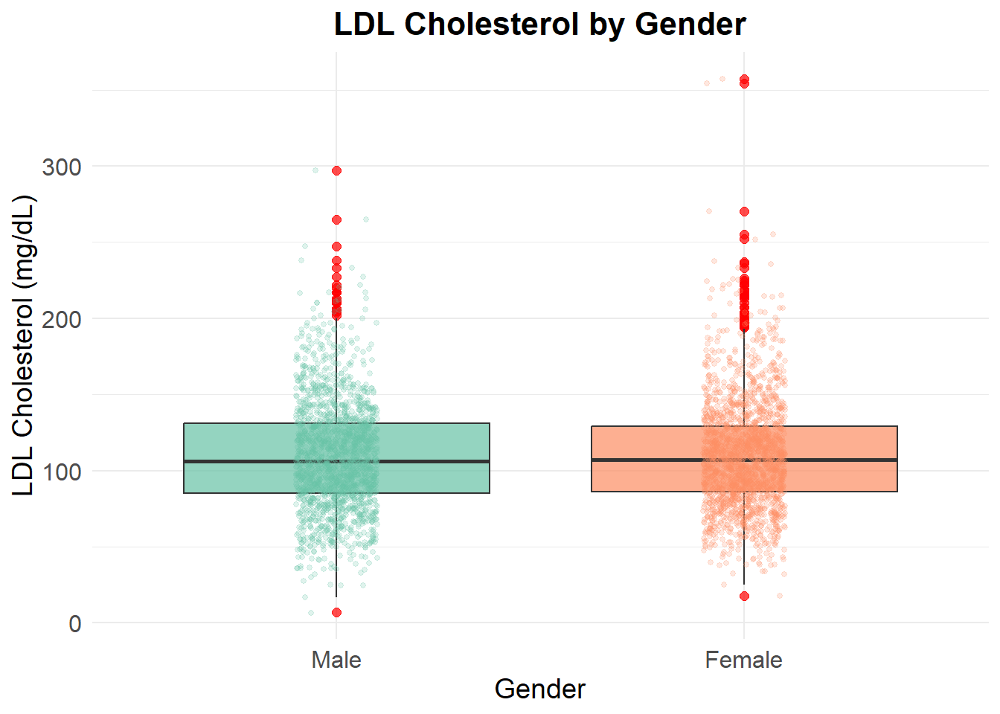

library(haven)
library(tidyverse)
library(broom)Overview
This page presents key findings from our study analyses based on the NHANES dataset.
A. Data Cleaning and Preparation
P_TRIGLY_data <- read_xpt("C:/Users/medha/OneDrive/Desktop/CRSP 431/Project B/Dashboard Blog/P_TRIGLY.xpt") %>%
as_tibble()# Create 'data' directory if it doesn't exist
if (!dir.exists("data")) {
dir.create("data")
}
saveRDS(P_TRIGLY_data, "data/P_TRIGLY.Rds")ldl_raw <- readRDS("data/P_TRIGLY.Rds")P_DEMO_data <- read_xpt("C:/Users/medha/OneDrive/Desktop/CRSP 431/Project B/Dashboard Blog/P_DEMO.xpt") %>%
as_tibble()
# Create 'data' directory if it doesn't exist
if (!dir.exists("data")) {
dir.create("data")
}
saveRDS(P_DEMO_data, "data/P_DEMO.Rds")
demo_raw <- readRDS("data/P_DEMO.Rds")P_BMX_data <- read_xpt("C:/Users/medha/OneDrive/Desktop/CRSP 431/Project B/Dashboard Blog/P_BMX.xpt") %>%
as_tibble()
# Create 'data' directory if it doesn't exist
if (!dir.exists("data")) {
dir.create("data")
}
saveRDS(P_BMX_data, "data/P_BMX.Rds")
bmi_raw <- readRDS("data/P_BMX.Rds")NEW <- left_join(demo_raw, ldl_raw, by = "SEQN")NEW2 <- left_join(NEW, bmi_raw, by = "SEQN")# Rename the dataset
combined_data <- NEW2# Load necessary libraries
library(tidyverse)
# Filter the dataset
combined_data <- combined_data %>%
filter(RIDSTATR == 2)
# Save the filtered dataset
if (!dir.exists("data")) {
dir.create("data")
}
saveRDS(combined_data, "data/combined_data_filtered.Rds")# Load necessary libraries
library(tidyverse)
# Filter out subjects with RIDAGEYR == 80 while keeping combined_data_filtered
combined_data <- combined_data %>%
filter(RIDAGEYR != 80)
# Save the updated filtered dataset
if (!dir.exists("data")) {
dir.create("data")
}
saveRDS(combined_data, "data/combined_data.Rds")# Load necessary libraries
library(tidyverse)
# Filter subjects aged between 21 and 79
combined_data <- combined_data %>%
filter(RIDAGEYR >= 21 & RIDAGEYR <= 79)
# Save the updated filtered dataset
if (!dir.exists("data")) {
dir.create("data")
}
saveRDS(combined_data, "data/combined_data.Rds")# Load necessary libraries
library(tidyverse)
# Filter subjects aged between 21 and 79 and rename to clean_data
clean_data <- combined_data%>%
filter(RIDAGEYR >= 21 & RIDAGEYR <= 79)
# Save the cleaned dataset
if (!dir.exists("data")) {
dir.create("data")
}
saveRDS(clean_data, "data/clean_data.Rds")# Load necessary libraries
library(tidyverse)
# Keep only the specified variables
clean_data <- clean_data %>%
select(SEQN, RIAGENDR, RIDRETH1, DMDMARTZ, LBDLDL, BMXBMI)
# Save the updated dataset
if (!dir.exists("data")) {
dir.create("data")
}
saveRDS(clean_data, "data/clean_data.Rds")clean_data <- clean_data |>
mutate(SEQN = as.character(SEQN))# Load necessary libraries
library(tidyverse)
# Keep only the specified variables
clean_data <- clean_data %>%
select(SEQN, RIAGENDR, RIDRETH1, DMDMARTZ, LBDLDL, BMXBMI)
# Save the updated dataset
if (!dir.exists("data")) {
dir.create("data")
}
saveRDS(clean_data, "data/clean_data.Rds")# Load necessary libraries
library(tidyverse)
# Rename selected variables
clean_data <- clean_data %>%
rename(
gender = RIAGENDR,
race_ethnicity = RIDRETH1,
marital_status = DMDMARTZ,
LDL = LBDLDL,
BMI = BMXBMI
)
# Save the updated dataset as RDS
if (!dir.exists("data")) {
dir.create("data")
}
saveRDS(clean_data, "data/clean_data.Rds")# Create the obesity variable
clean_data <- clean_data %>%
mutate(obesity = if_else(BMI >= 30, 1, 0))
# Save the updated dataset
if (!dir.exists("data")) {
dir.create("data")
}
saveRDS(clean_data, "data/clean_data.Rds")clean_data <- clean_data %>%
mutate(
LDL = as.numeric(LDL),
BMI = as.numeric(BMI)
)
# Save the updated dataset as RDS
if (!dir.exists("data")) {
dir.create("data")
}
saveRDS(clean_data, "data/clean_data.Rds")# Convert selected variables to factors
clean_data <- clean_data %>%
mutate(across(
.cols = -c(SEQN, LDL, BMI), # Exclude these columns
.fns = as.factor # Convert remaining variables to factors
))
# Save the updated dataset as RDS
if (!dir.exists("data")) {
dir.create("data")
}
saveRDS(clean_data, "data/clean_data.Rds")# Recode variables
clean_data <- clean_data %>%
mutate(
# Recode gender
gender = recode(gender,
`1` = "Male",
`2` = "Female"),
# Recode race_ethnicity
race_ethnicity = recode(race_ethnicity,
`1` = "Mexican American",
`2` = "Other Hispanic",
`3` = "Non-Hispanic White",
`4` = "Non-Hispanic Black",
`5` = "Other Race"),
# Recode marital_status
marital_status = recode(marital_status,
`1` = "Married_Living with Partner",
`2` = "Widowed_Divorced_Separated",
`3` = "Never_married")
)
# Save the updated dataset as RDS
if (!dir.exists("data")) {
dir.create("data")
}
saveRDS(clean_data, "data/clean_data.Rds")# Recode obesity variable
clean_data <- clean_data %>%
mutate(obesity = recode(obesity,
`1` = "Obese",
`0` = "Non-obese"))
# Save the updated dataset as RDS
if (!dir.exists("data")) {
dir.create("data")
}
saveRDS(clean_data, "data/clean_data.Rds")# Filter out invalid values
clean_data <- clean_data %>%
filter(!marital_status %in% c("77", "99")) %>%
filter(!race_ethnicity %in% c("77", "99")) %>%
mutate(
marital_status = droplevels(marital_status),
race_ethnicity = droplevels(race_ethnicity)
)
# Save the updated dataset as RDS
if (!dir.exists("data")) {
dir.create("data")
}
saveRDS(clean_data, "data/clean_data.Rds")# View summary of the dataset
summary(clean_data) SEQN gender race_ethnicity
Length:7846 Male :3792 Mexican American : 945
Class :character Female:4054 Other Hispanic : 847
Mode :character Non-Hispanic White:2491
Non-Hispanic Black:2175
Other Race :1388
marital_status LDL BMI
Married_Living with Partner:4645 Min. : 7.0 Min. :14.60
Widowed_Divorced_Separated :1648 1st Qu.: 85.0 1st Qu.:25.00
Never_married :1553 Median :106.0 Median :28.90
Mean :109.5 Mean :30.24
3rd Qu.:130.0 3rd Qu.:34.00
Max. :357.0 Max. :92.30
NA's :4248 NA's :117
obesity
Non-obese:4340
Obese :3389
NA's : 117
clean_data <- readRDS("data/clean_data.Rds")B. Analysis 1: Compare Two Means/Medians Using Independent Samples
Research Question: Is there a difference in mean LDL-C between males and females?
We will use the following code (graph first, then t-test):
# Load necessary libraries
library(tidyverse)
# Create Boxplot with Smaller and More Subtle Dots
ggplot(clean_data, aes(x = gender, y = LDL, fill = gender)) +
geom_boxplot(alpha = 0.7, outlier.color = "red", outlier.size = 2) +
geom_jitter(aes(color = gender), width = 0.1, alpha = 0.2, size = 1) +
scale_fill_brewer(palette = "Set2") +
scale_color_brewer(palette = "Set2") +
labs(
title = "LDL Cholesterol by Gender",
x = "Gender",
y = "LDL Cholesterol (mg/dL)"
) +
theme_minimal() +
theme(
plot.title = element_text(hjust = 0.5, size = 16, face = "bold"),
axis.title = element_text(size = 14),
axis.text.x = element_text(size = 12),
axis.text.y = element_text(size = 12),
legend.position = "none"
)Warning: Removed 4248 rows containing non-finite outside the scale range
(`stat_boxplot()`).Warning: Removed 4248 rows containing missing values or values outside the scale range
(`geom_point()`).
# Descriptive Summary by Gender
summary_stats <- clean_data %>%
group_by(gender) %>%
summarise(
mean_LDL = mean(LDL, na.rm = TRUE),
sd_LDL = sd(LDL, na.rm = TRUE),
median_LDL = median(LDL, na.rm = TRUE),
n = n()
)
print(summary_stats)# A tibble: 2 × 5
gender mean_LDL sd_LDL median_LDL n
<fct> <dbl> <dbl> <dbl> <int>
1 Male 109. 35.8 106 3792
2 Female 110. 35.5 107 4054# Perform Independent Samples t-test with 90% CI
t_test_results <- t.test(LDL ~ gender, data = clean_data,
var.equal = FALSE, conf.level = 0.90)
# Print t-test Results
print(t_test_results)
Welch Two Sample t-test
data: LDL by gender
t = -0.45112, df = 3567.9, p-value = 0.6519
alternative hypothesis: true difference in means between group Male and group Female is not equal to 0
90 percent confidence interval:
-2.495289 1.421373
sample estimates:
mean in group Male mean in group Female
109.2247 109.7616 # Extract and Print the 90% Confidence Interval
conf_interval <- t_test_results$conf.int
message("90% Confidence Interval for the Difference in Means: ",
round(conf_interval[1], 2), " to ", round(conf_interval[2], 2))90% Confidence Interval for the Difference in Means: -2.5 to 1.42As we can see from the graph and t-test, there is no significant difference in mean LDL between males and females.
C. Analysis 2: Compare 3-6 Means/Medians Using Independent Samples
Research Question: Is there a difference in mean LDL-C according to marital status?
We will use the following code (graph first, then ANOVA):
# Load necessary libraries
library(tidyverse)
# Create Boxplot with Smaller and More Subtle Dots
ggplot(clean_data, aes(x = marital_status, y = LDL, fill = marital_status)) +
geom_boxplot(alpha = 0.7, outlier.color = "red", outlier.size = 2) +
geom_jitter(aes(color = marital_status), width = 0.1, alpha = 0.2, size = 1) +
scale_fill_brewer(palette = "Set2") +
scale_color_brewer(palette = "Set2") +
labs(
title = "LDL Cholesterol by Marital Status",
x = "Marital Status",
y = "LDL Cholesterol (mg/dL)"
) +
theme_minimal() +
theme(
plot.title = element_text(hjust = 0.5, size = 16, face = "bold"),
axis.title = element_text(size = 14),
axis.text.x = element_text(size = 10, angle = 25, hjust = 1),
axis.text.y = element_text(size = 12),
legend.position = "none"
)# Load necessary libraries
library(tidyverse)
# Perform One-Way ANOVA
anova_results <- aov(LDL ~ marital_status, data = clean_data)
# Display ANOVA Summary
summary(anova_results) Df Sum Sq Mean Sq F value Pr(>F)
marital_status 2 18294 9147 7.221 0.000742 ***
Residuals 3595 4554093 1267
---
Signif. codes: 0 '***' 0.001 '**' 0.01 '*' 0.05 '.' 0.1 ' ' 1
4248 observations deleted due to missingness# Perform Tukey's Honest Significant Difference (HSD) Test
tukey_results <- TukeyHSD(anova_results, conf.level = 0.90)
# Display Tukey HSD Results
print(tukey_results) Tukey multiple comparisons of means
90% family-wise confidence level
Fit: aov(formula = LDL ~ marital_status, data = clean_data)
$marital_status
diff lwr
Widowed_Divorced_Separated-Married_Living with Partner 0.778988 -2.317805
Never_married-Married_Living with Partner -5.457317 -8.645255
Never_married-Widowed_Divorced_Separated -6.236305 -10.082236
upr p adj
Widowed_Divorced_Separated-Married_Living with Partner 3.875781 0.8633450
Never_married-Married_Living with Partner -2.269378 0.0012966
Never_married-Widowed_Divorced_Separated -2.390374 0.0025354The ANOVA results indicate a statistically significant difference in mean LDL levels across marital status groups (p < 0.001). Post-hoc Tukey HSD tests reveal that individuals who are Never married have significantly lower mean LDL levels compared to both Married/Living with Partner and Widowed/Divorced/Separated groups, with p < 0.01 for both comparisons.
D. Analysis 3: Create and analyze a 2×2 table
Research Question: Is there an association between obesity status (obese vs. non-obese) and males/females?
Note: obesity is defined as BMI >or=30.
We will use the following code (visualization first, then Chi Square):
# Load necessary libraries
library(tidyverse)
# Create Stacked Bar Chart
ggplot(clean_data, aes(x = gender, fill = obesity)) +
geom_bar(position = "fill", alpha = 0.8) +
scale_y_continuous(labels = scales::percent_format()) +
scale_fill_brewer(palette = "Set2") +
labs(
title = "Proportion of Obesity by Gender",
x = "Gender",
y = "Proportion",
fill = "Obesity Status"
) +
theme_minimal() +
theme(
plot.title = element_text(hjust = 0.5, size = 16, face = "bold"),
axis.title = element_text(size = 14),
axis.text = element_text(size = 12),
legend.title = element_text(size = 12),
legend.text = element_text(size = 10)
)obesity_gender_table <- table(clean_data$obesity, clean_data$gender)
# Convert the table to a data frame with percentages
obesity_gender_df <- as.data.frame(obesity_gender_table) %>%
group_by(Var2) %>% # Group by gender
mutate(
Percentage = Freq / sum(Freq) * 100
)
# Display the table with counts and percentages
obesity_gender_df %>%
rename(
Obesity_Status = Var1,
Gender = Var2,
Count = Freq
) %>%
arrange(Gender, Obesity_Status)# A tibble: 4 × 4
# Groups: Gender [2]
Obesity_Status Gender Count Percentage
<fct> <fct> <int> <dbl>
1 Non-obese Male 2218 59.5
2 Obese Male 1512 40.5
3 Non-obese Female 2122 53.1
4 Obese Female 1877 46.9# Create a contingency table
obesity_gender_table <- table(clean_data$obesity, clean_data$gender)
# Perform Chi-Square Test
chi_square_results <- chisq.test(obesity_gender_table)
# Display Chi-Square Test Results
print(chi_square_results)
Pearson's Chi-squared test with Yates' continuity correction
data: obesity_gender_table
X-squared = 31.852, df = 1, p-value = 1.664e-08The Chi-Square test results indicate a statistically significant association between obesity status and gender (X² = 31.852, p < 0.001). This suggests that the distribution of obesity differs significantly between males and females (females tend to have a higher prevalence of obesity)
E. Analysis 4: Create and analyze a J×K table, where 2≤J≤5 and 3≤K≤5
Research Question: Is there an association between race/ethnicity and marital status (3 levels)?
We will use the following code (visualization first, then Chi Square statistical testing):
# Load necessary libraries
library(tidyverse)
# Create Stacked Bar Chart
ggplot(clean_data, aes(x = race_ethnicity, fill = marital_status)) +
geom_bar(position = "fill", alpha = 0.8) +
scale_y_continuous(labels = scales::percent_format()) +
scale_fill_brewer(palette = "Set2") +
labs(
title = "Marital Status by Race/Ethnicity",
x = "Race/Ethnicity",
y = "Proportion",
fill = "Marital Status"
) +
theme_minimal() +
theme(
plot.title = element_text(hjust = 0.5, size = 16, face = "bold"),
axis.title = element_text(size = 14),
axis.text.x = element_text(size = 10, angle = 25, hjust = 1),
axis.text.y = element_text(size = 12),
legend.title = element_text(size = 12),
legend.text = element_text(size = 10)
)# Load necessary libraries
library(tidyverse)
# Remove missing values
clean_data <- clean_data %>%
filter(!race_ethnicity %in% c("77", "99")) %>%
filter(!marital_status %in% c("77", "99"))
# Create Contingency Table
race_marital_table <- table(clean_data$race_ethnicity, clean_data$marital_status)
# Convert Table to Data Frame
race_marital_df <- as.data.frame(race_marital_table) %>%
group_by(Var1) %>% # Group by race_ethnicity
mutate(
Percentage = Freq / sum(Freq) * 100
)
# Display the Table with Counts and Percentages
race_marital_df %>%
rename(
Race_Ethnicity = Var1,
Marital_Status = Var2,
Count = Freq
) %>%
arrange(Race_Ethnicity, Marital_Status) %>%
mutate(
Percentage = paste0(round(Percentage, 2), "%")
)# A tibble: 15 × 4
# Groups: Race_Ethnicity [5]
Race_Ethnicity Marital_Status Count Percentage
<fct> <fct> <int> <chr>
1 Mexican American Married_Living with Partner 628 66.46%
2 Mexican American Widowed_Divorced_Separated 171 18.1%
3 Mexican American Never_married 146 15.45%
4 Other Hispanic Married_Living with Partner 520 61.39%
5 Other Hispanic Widowed_Divorced_Separated 185 21.84%
6 Other Hispanic Never_married 142 16.77%
7 Non-Hispanic White Married_Living with Partner 1573 63.15%
8 Non-Hispanic White Widowed_Divorced_Separated 548 22%
9 Non-Hispanic White Never_married 370 14.85%
10 Non-Hispanic Black Married_Living with Partner 945 43.45%
11 Non-Hispanic Black Widowed_Divorced_Separated 572 26.3%
12 Non-Hispanic Black Never_married 658 30.25%
13 Other Race Married_Living with Partner 979 70.53%
14 Other Race Widowed_Divorced_Separated 172 12.39%
15 Other Race Never_married 237 17.07% # Load necessary libraries
library(tidyverse)
# Create Contingency Table
race_marital_table <- table(clean_data$race_ethnicity, clean_data$marital_status)
# Perform Chi-Square Test
chi_square_results <- chisq.test(race_marital_table)
# Display Results
print("Chi-Square Test Results:")[1] "Chi-Square Test Results:"print(chi_square_results)
Pearson's Chi-squared test
data: race_marital_table
X-squared = 389.26, df = 8, p-value < 2.2e-16The Chi-Square test results (X² = 389.26, df = 8, p < 0.001) indicate a statistically significant association between marital status and race/ethnicity. This suggests that marital status distribution varies meaningfully across different racial/ethnic groups.
#CODEBOOK
| Variable | Old Name | Description |
|---|---|---|
| SEQN | SEQN | ID |
| gender | RIAGENDER | Male/Female |
| race_ethnicity | RIDRETH1 | 5 levels |
| marital_status | DMDMARTZ | 3 levels |
| LDL | LBDLDL | LDL-Cholesterol in mg/dl |
| BMI | BMXBMI | Body mass index kg/m2 |
| obesity | - | Defined as BMI >or = 30 |